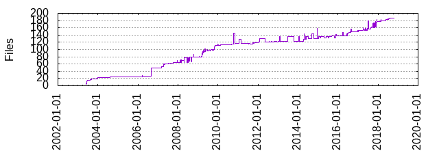

Files
- Total files
- 186
- Total lines
- 41313
- Average file size
- 7521.23 bytes

| Extension | Files (%) | Lines (%) | Lines/file |
|---|
| 19 (10.22%) | 5325 (12.89%) | 280 |
| 1 | 2 (1.08%) | 253 (0.61%) | 126 |
| ac | 1 (0.54%) | 679 (1.64%) | 679 |
| alpine | 1 (0.54%) | 12 (0.03%) | 12 |
| am | 2 (1.08%) | 174 (0.42%) | 87 |
| arch | 1 (0.54%) | 17 (0.04%) | 17 |
| bipbuffer | 1 (0.54%) | 24 (0.06%) | 24 |
| c | 29 (15.59%) | 20427 (49.44%) | 704 |
| conf | 1 (0.54%) | 3 (0.01%) | 3 |
| d | 1 (0.54%) | 302 (0.73%) | 302 |
| damemtop | 1 (0.54%) | 20 (0.05%) | 20 |
| dtd | 1 (0.54%) | 304 (0.74%) | 304 |
| ent | 2 (1.08%) | 226 (0.55%) | 113 |
| h | 22 (11.83%) | 2284 (5.53%) | 103 |
| in | 1 (0.54%) | 193 (0.47%) | 193 |
| itoa_ljust | 1 (0.54%) | 39 (0.09%) | 39 |
| m4 | 1 (0.54%) | 188 (0.46%) | 188 |
| md | 2 (1.08%) | 46 (0.11%) | 23 |
| pl | 4 (2.15%) | 244 (0.59%) | 61 |
| pm | 1 (0.54%) | 318 (0.77%) | 318 |
| service | 2 (1.08%) | 173 (0.42%) | 86 |
| sh | 2 (1.08%) | 63 (0.15%) | 31 |
| sysconfig | 1 (0.54%) | 10 (0.02%) | 10 |
| sysv | 1 (0.54%) | 78 (0.19%) | 78 |
| t | 69 (37.10%) | 6410 (15.52%) | 92 |
| txt | 5 (2.69%) | 1448 (3.50%) | 289 |
| ubuntu | 1 (0.54%) | 12 (0.03%) | 12 |
| upstart | 2 (1.08%) | 51 (0.12%) | 25 |
| xml | 4 (2.15%) | 1758 (4.26%) | 439 |
| xsl | 2 (1.08%) | 185 (0.45%) | 92 |
| yaml | 1 (0.54%) | 16 (0.04%) | 16 |
| yml | 2 (1.08%) | 31 (0.08%) | 15 |